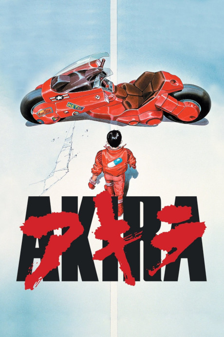
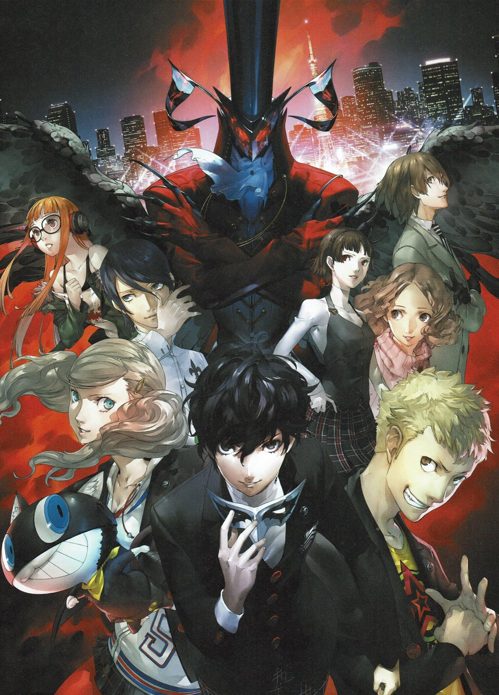

crackheadakira's site
I made this because carrd.co has an element limit if you had a free plan, and this was an easier way as I didn't have to spend money. Anyway here's my Anilist profile
It's dangerous to go alone, take this!
My Favourite Characters
These here are the characters that I like from a specific Anime / Manga
From The Disastrous Life of Saiki K
I like him because he's a chill character that I can relate to.
From Mob Psycho 100
 Do I need a reason to like him?
Do I need a reason to like him?
From Record of Ragnarok
This dude is fucking sexy and a BADASS what else could you ask for!
He's THE local pervert that I like.
Favourite Series
I'm gonna limit myself to one manga and one anime
mmm sexy jazz!
don't do drugs kids
Favourite Game Series
Here are my two favourite game series
The Yakuza Series
The entire series is amazing with it's story. Two reasons why this game series is so great is because of the SUBSTORIES and the MINIGAMES the games have, the substories are the exact opposite of what the story sometimes can be and you can lose yourself in the minigames.
The Persona Series
I didn't really like JRPG's until I played Persona 5. Everything about Persona 5 is amazing, the OST, the character designs and most importantly the vibe the game has, it's one of the best i've ever experienced.